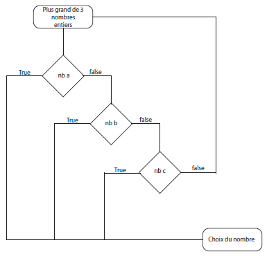

Exercices 5 et 6
Frederick Denis
Exercice 5
Une fonction retirant une taxe de 10% sur un salaire X lorsqu'il est supérieur à 4000$:
function reductionSalaire(montant){
if (montant > 4000){
montant -= montant*0.1;
console.log ("Votre salaire est maintenant de " + montant + " $.")
} else {
console.log ("Votre salaire de " + montant + " $ est brut.");
}
}
reductionSalaire(5000);
Exercice 6
Un logigramme et une fonction déterminant le plus grand nombre entier parmis trois nombres:

function nombrePlusGrand(nba, nbb, nbc) {
let nbGrand =
if(nba > nbb) {
nbGrand = nba
} else if (nbb > nbc) {
nbGrand=nbb
}else{
nbGrand=nbc
}
console.log = nbGrand
}
nombrePlusGrand (10,20,30)